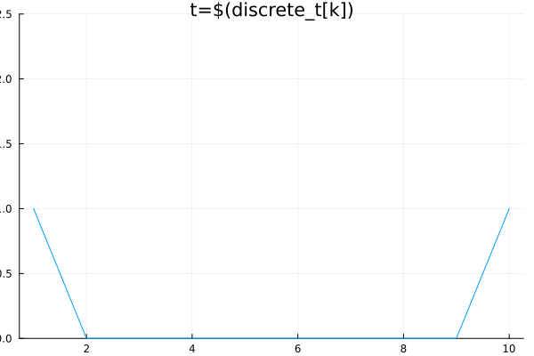

using EarthSciMLBase
using DomainSets, MethodOfLines, ModelingToolkit, Plots, DifferentialEquations
# Create our independent variable `t` and our partially-independent variable `x`.
@parameters t, x
# Create our ODE system of equations as a subtype of `EarthSciMLODESystem`.
# Creating our system in this way allows us to convert it to a PDE system
# using just the `+` operator as shown below.
struct ExampleSys <: EarthSciMLODESystem
sys::ODESystem
function ExampleSys(t; name)
@variables y(t)
@parameters p=2.0
D = Differential(t)
new(ODESystem([D(y) ~ p], t; name))
end
end
@named sys = ExampleSys(t)
# Create our initial and boundary conditions.
domain = DomainInfo(constIC(0.0, t ∈ Interval(0, 1.0)), constBC(1.0, x ∈ Interval(0, 1.0)))
# Convert our ODE system to a PDE system and add advection to each of the state variables.
# We're also adding a constant wind in the x-direction, with a speed of 1.0.
sys_advection = sys + domain + ConstantWind(t, 1.0) + Advection()
sys_mtk = get_mtk(sys_advection)
# Discretize the system and solve it.
discretization = MOLFiniteDifference([x=>10], t, approx_order=2)
@time prob = discretize(sys_mtk, discretization)
@time sol = solve(prob, Tsit5(), saveat=0.1)
# Plot the solution.
discrete_x = sol[x]
discrete_t = sol[t]
@variables sys₊y(..)
soly = sol[sys₊y(t, x)]
anim = @animate for k in 1:length(discrete_t)
plot(soly[k, 1:end], title="t=\$(discrete_t[k])", ylim=(0,2.5), lab=:none)
end
gif(anim, fps = 8)
